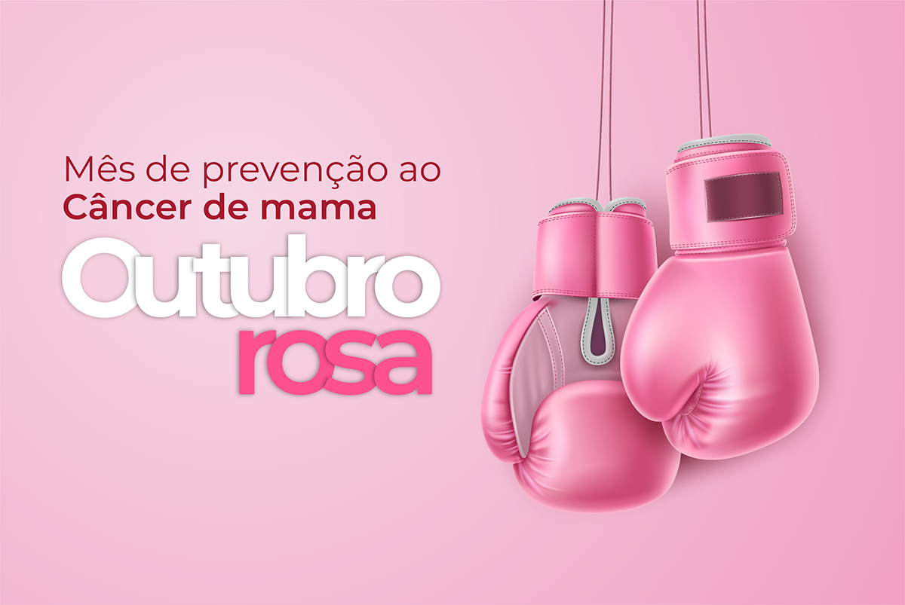

Outubro Rosa é uma campanha de conscientização que tem como objetivo principal alertar as mulheres e a sociedade sobre a importância da prevenção e do diagnóstico precoce do câncer de mama e mais recentemente sobre o câncer de colo do útero.
No Brasil, as campanhas de conscientização sobre o câncer de mama acontecem desde 2002, mas foram instituídas por lei federal apenas em 2018. E, a partir de 2011, ocorrem campanhas sobre o câncer de colo do útero em diversos estados. A publicidade adotou o tom de rosa como motivador de campanhas no período, e ações em mídias sociais também tendem a ser reforçadas durante este mês. No Brasil, a primeira iniciativa, foi no ano de 2002 em São Paulo quando iluminaram, de cor de rosa, o monumento Mausoléu do Soldado Constitucionalista (o Obelisco do Ibirapuera). Essa iniciativa começou com um grupo de mulheres.
